1 OVERVIEW
NuTool – LCDView는 Com/Seg 테이블과 Canvas의 아이콘을 설정하여 PC에 LCD 보기를 동기적으로 표시하는 데 사용됩니다. 사용자는 각 유형의 LCD 보기를 에뮬레이트하기 위해 화면 패턴을 자유롭게 디자인할 수 있습니다.
1.1 Supported Chips
지원되는 칩 목록을 보려면 C:\Users\<사용자 이름>\AppData\Local\Programs\LCDView\resources\assets의 Supported_chips.htm을 참조하세요.
2 FEATURES
Features are listed below:
- 내장 도구를 사용한 캔버스 디자인: 내장 아이콘을 사용하거나 사용자가 만든 SVG 파일을 가져와서 이러한 아이콘을 캔버스에 배치하여 LCD 화면을 시뮬레이션합니다.
- 코드 생성: 사용자의 디자인에 따라 헤더 파일을 생성합니다. 생성된 헤더 파일은 NuMicro BSP의 LCD 샘플에 적용됩니다.
- LCD 보기를 동기적으로 표시: 핀을 구성하면 사용자의 Canvas는 칩 연결 시 LCD 보기를 동기적으로 표시할 수 있습니다.
LCD 화면이 준비되지 않은 경우 애플리케이션을 통해 사용자는 PC에서 LCDView를 에뮬레이션할 수 있습니다.
3 REQUIREMENTS
LCDView를 사용하기 위한 소프트웨어 및 하드웨어 요구 사항은 다음과 같습니다.
- Windows 8.1 이상의 운영 체제.
- Internet Explorer 11 이상.
- Nu-Link2 디버그 프로브, 에뮬레이터 기능용.
- v3.10.74xx Nu-Link2 펌웨어 버전 이상.
4.1 도구 설치
아래 단계에 따라 응용 프로그램을 설치하십시오. 1. .exe 파일을 찾아 두 번 클릭합니다.
2. A dialog box will appear. LCDView will be installed.
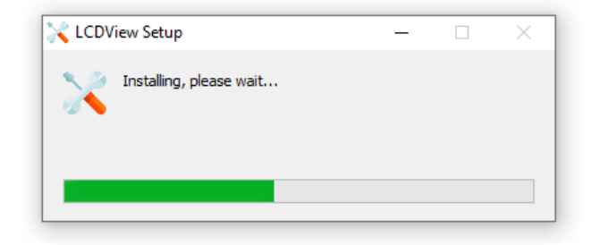
4.2 도구 실행
Windows의 시작 메뉴를 클릭하고 NuTool – LCDView를 선택합니다.
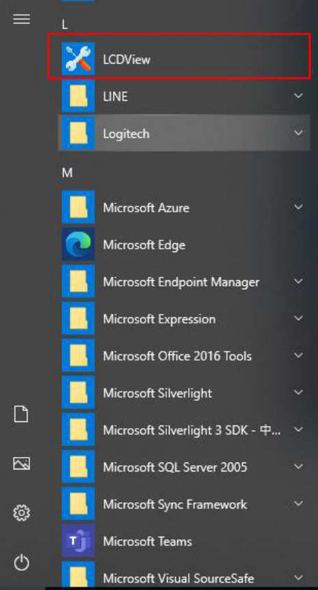
5.1 창 개요
NuTool - LCDView 창에는 다양한 구성 요소가 포함되어 있습니다. 구성 요소는 다음 섹션에 설명되어 있습니다.
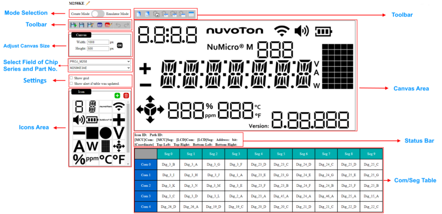
5.1.1.1 Create Mode
Create 모드에서는 Canvas 크기, 아이콘 스타일, Com/Seg 테이블 편집 등 Canvas 패턴을 편집할 수 있습니다.
5.1.1.2Emulator Mode
Canvas 설정이 완료되면 칩으로 연결하고 에뮬레이터 모드로 전환합니다. 사용자는 Canvas의 보기가 칩의 LCD 보기와 동기화되는 것을 볼 수 있습니다. 에뮬레이터 모드 시스템에서는 에뮬레이터 기능이 영향을 받지 않도록 편집 가능한 옵션을 숨깁니다.
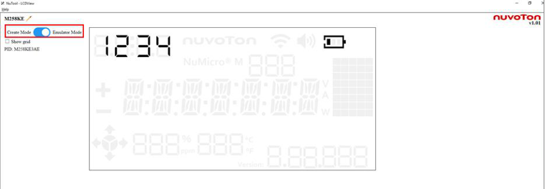
5.1.2 Toolbar
도구 모음의 아이콘이 아래에 표시되고 설명됩니다.
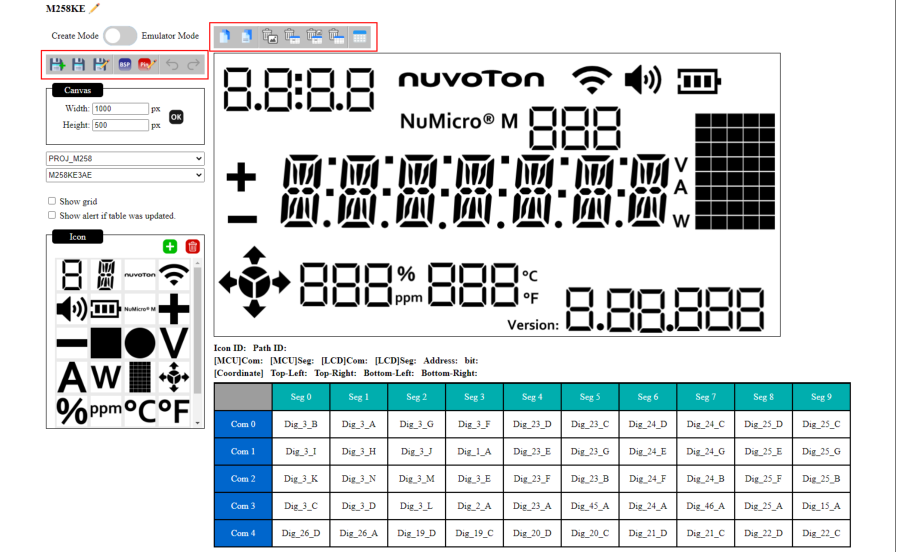
5.1.2.1새 프로젝트 생성
새 프로젝트를 생성하려면 도구 모음에서 프로젝트 생성 아이콘을 클릭하세요.
5.1.2.2 프로젝트 저장
현재 상태(Canvas, Com/Seg Table, 사용자가 업로드한 SVG 파일)를 저장하려면 다음 단계를 따르세요.
1. 도구 모음에서 프로젝트 저장 아이콘을 클릭합니다.
2. 현재 상태가 nvt 파일에 저장됩니다. 프로젝트를 로드하여 복구할 수도 있습니다.
5.1.2.3 프로젝트 로드
저장된 상태를 복구하려면 도구 모음에서 프로젝트 로드 아이콘을 클릭하고 필요한 NVT 파일을 선택하세요.
5.1.2.4 Generate Header File
Canvas 설정이 완료되면 툴바의 헤더 파일 생성 아이콘을 클릭하여 BSP용 헤더 파일을 생성합니다.
5.1.2.5 Pinconfig 구성 파일 로드
도구 모음에서 Load Pinconfig .cfg 파일 아이콘을 클릭하면 Com/Seg 테이블에 해당 핀 번호가 표시됩니다. (NuTool-PinConfigure 도구를 사용하고 Com/Seg 핀을 사용하여 설정한 다음 NuTool-LCDView로 내보내는 것이 좋습니다).
5.1.2.6 Undo
최근 변경 사항을 취소하려면 도구 모음을 누르거나 Ctrl+Z를 누르세요.
5.1.2.7 Redo
실행 취소한 작업을 다시 실행하려면 도구 모음을 클릭하거나 Ctrl+Y를 누르세요.
5.1.2.8 Copy
선택 아이콘을 복사하려면 도구 모음의 붙여넣기 아이콘에서 복사 아이콘을 클릭하거나 Ctrl+V를 누르세요. 복사한 아이콘을 붙여넣으려면 도구 모음의 붙여넣기 아이콘을 클릭하면 붙여넣은 아이콘이 캔버스에 추가됩니다.
5.1.2.9 Delete Selected Icon on Canvas
Canvas에서 불필요한 아이콘을 선택하고 툴바의 Canvas 아이콘에서 선택한 아이콘 삭제를 클릭합니다. 아이콘 및 관련 Com/Seg 값이 삭제됩니다.
5.1.2.10 Delete single Com/Seg value
불필요한 Com/Seg 값을 선택하고 도구 모음에서 단일 Com/Seg 값 삭제 아이콘을 클릭합니다. Com/Seg 값이 삭제됩니다.
5.1.2.12 이 아이콘과 관련된 Com/Seg 값 삭제
아이콘을 유지하되 관련 Com/Seg 값을 재설정하려면 Canvas에서 아이콘을 선택하고 도구 모음에서 이 아이콘 아이콘과 관련된 Com/Seg 값 삭제를 클릭합니다.
5.1.2.13 Delete all Com/Seg value
Com/Seg 테이블을 재설정하려면 Canvas에서 아이콘을 선택하고 도구 모음에서 모든 Com/Seg 값 삭제 아이콘을 클릭합니다.
5.1.2.14 Conversion Table
변환 테이블 아이콘을 클릭하면 사용자가 MCU 및 LCD에 대한 Com/Seg 정의 매핑을 수동으로 채울 수 있는 양식이 표시됩니다. 테이블 채우기를 완료한 후 사용자가 아이콘 경로를 클릭하면 변환된 결과가 상태 표시줄에 표시됩니다.
5.1.3 Adjust Canvas Size
너비 및 높이 열에 값을 입력하여 캔버스 크기를 수정할 수 있습니다.
5.1.4 Show Grid
캔버스에 그리드를 표시하도록 확인란을 활성화할 수 있습니다.
5.1.5 Com/Seg 테이블 경고 활성화
Com/Seg 테이블이 수정되었을 때 확인 대화 상자를 표시하도록 확인란을 활성화할 수 있습니다.
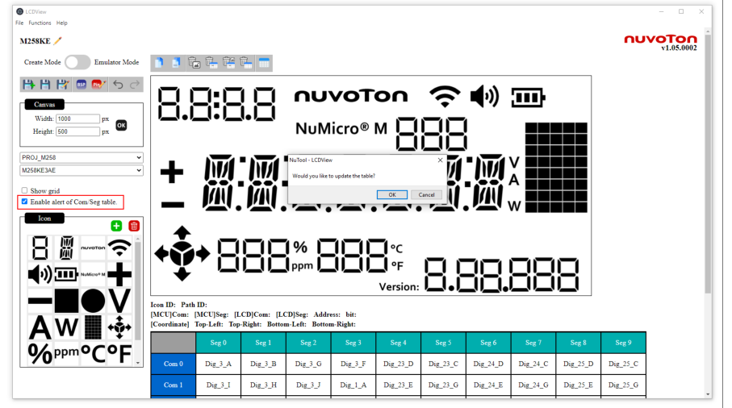
5.1.6 칩 시리즈 및 부품번호 분야 선택
사용자는 프로젝트의 칩 시리즈와 부품 번호를 선택할 수 있습니다. 선택 후 시스템은 해당 Com/Seg 번호를 설정하며 사용자는 설정을 유지하도록 선택할 수 있습니다.
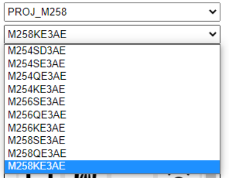
5.1.7 아이콘 및 캔버스
이 도구에는 M258KE3AE 화면에 대한 아이콘이 있습니다. 사용자는 아이콘 중 하나를 끌어서 캔버스에 놓을 수 있습니다. Canvas의 모든 아이콘은 LCD 보기를 에뮬레이트하기 위해 이동 및 크기 조정이 가능합니다.
사용자는 "+" 버튼을 사용하여 사용자 정의된 SVG 파일을 아이콘 열로 가져올 수 있습니다. SVG 파일만 가져올 수 있습니다. SVG 파일은 "inkscape" / "adobe"와 같은 타사 도구로 생성할 수 있습니다. 또한 동일한 SVG 레이어를 함께 조명할 수도 있습니다. 가져온 아이콘을 삭제해야 하는 경우 해당 아이콘을 선택하고 삭제 버튼을 클릭하세요.
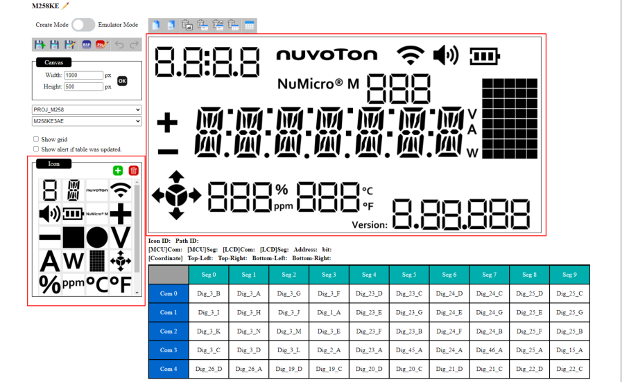
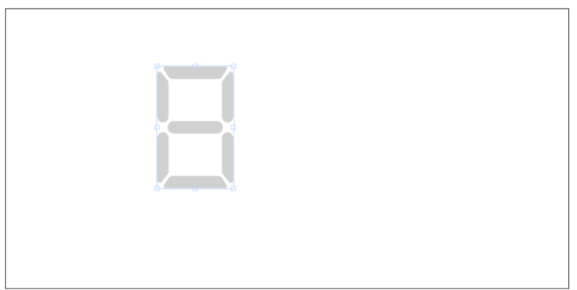
5.1.8 Status Bar
캔버스에서 아이콘을 선택하면 아래와 같이 캔버스 아래의 상태 표시줄에 아이콘에 대한 일부 정보가 표시됩니다.
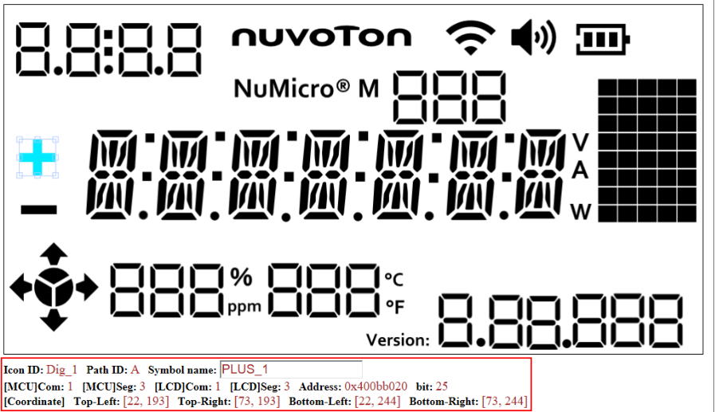
- Icon ID:
각 아이콘에는 고유한 ID가 있습니다. 값은 시스템에 의해 할당됩니다.
- Path ID:
SVG는 벡터 일러스트레이션이므로 각 요소는 경로로 구성됩니다. 각 경로에는 고유한 ID가 있습니다. 값은 시스템에 의해 할당됩니다.
- 그룹명 : 7세그먼트 디스플레이 또는 14세그먼트 디스플레이를 그룹명의 특정 ID로 설정하여 동일한 그룹명을 가진 모든 아이콘을 제어할 수 있습니다. 헤더 파일을 생성할 때 사용됩니다.
- Symbol name:
선택한 아이콘의 ID를 설정합니다. 헤더 파일을 생성할 때 사용됩니다. 값은 시스템에 의해 할당되지만 사용자가 업데이트할 수 있습니다.
- [MCU]Com / [MCU]Seg: MCU 보기의 Com/Seg 인덱스입니다.
- [LCD]Com / [LCD]Seg: LCD 화면의 Com/Seg 인덱스입니다.
- 주소:
선택한 경로의 Com/Seg에 따른 Chip의 레지스터 주소입니다.
- Bit:
선택한 경로의 Com/Seg에 따른 레지스터 주소의 비트
- Coordinates:
선택한 아이콘의 좌표입니다. 사용자는 키보드 화살표 키를 사용하여 업데이트할 수 있습니다.
5.1.9 Com/Seg Table
각 경로에는 해당 Com/Seg가 있습니다. 사용자는 Canvas에서 경로를 선택하고 관련 Com/Seg Table을 클릭해야 합니다. 선택한 그리드는 해당 아이콘 ID + 경로 ID로 채워져야 합니다. 캔버스에서 아이콘을 클릭하면 해당 경로에 연결된 모든 그리드가 빨간색 프레임으로 강조 표시됩니다.
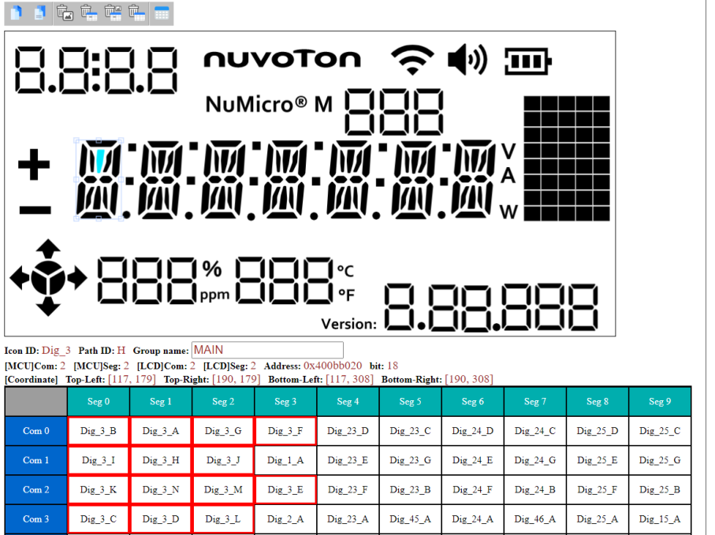
5.1.10 Conversion Table
테이블 왼쪽의 체크박스를 선택하면 Com/Seg 테이블의 Seg 열이 숨겨집니다.
사용자는 쓸모 없는 세그먼트 열을 숨길 수 있습니다.
Com/Seg 테이블은 MCU용이므로 LCD에는 또 다른 Com/Seg 설정이 있을 수 있습니다. 사용자는 테이블 오른쪽의 빈칸을 채워 MCU와 LCD의 매핑 테이블을 설정할 수 있습니다. 채워진 숫자는 상태 표시줄의 "[LCD]Com" 또는 "[LCD]Seg" 필드에 표시됩니다.
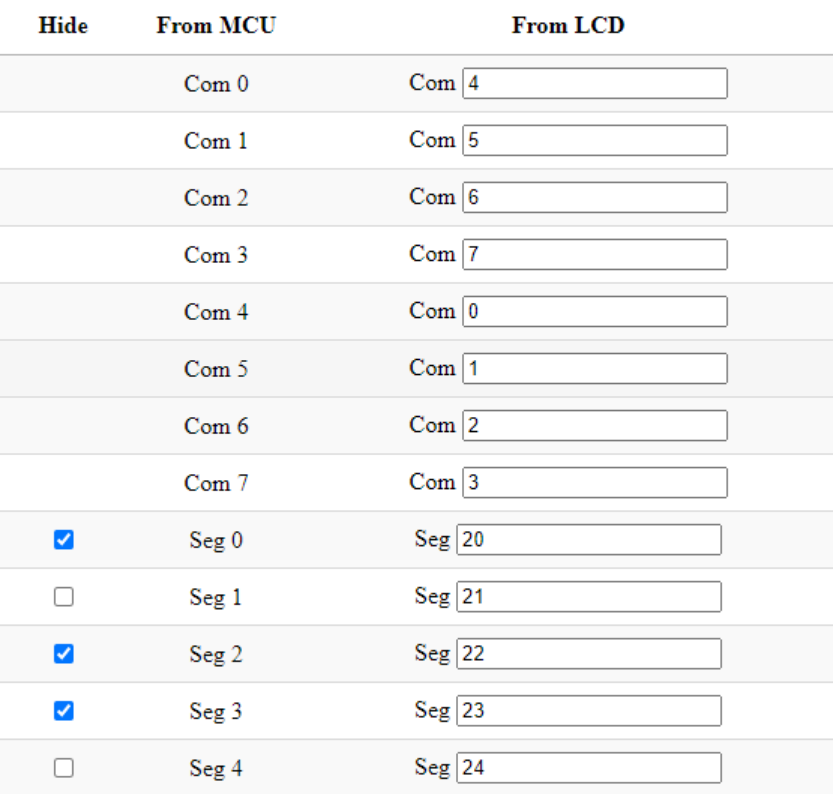
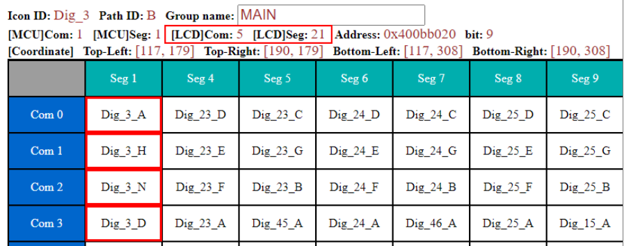
5.2 도구 사용
이 도구는 Nuvoton BSP 샘플과 함께 사용할 수 있습니다. 아래 단계를 따르십시오.
1. 칩 시리즈와 부품번호를 선택하세요.
2. Create Mode를 이용하여 LCD와 같은 캔버스를 생성하고, 문서별로 해당 아이콘으로 Com/Seg Table을 설정한 후 NVT 파일로 저장합니다.
- 사용자는 각 7세그먼트 디스플레이 또는 14세그먼트 디스플레이의 그룹 이름을 수동으로 할당해야 합니다. 그렇지 않으면 이러한 아이콘이 lcdzone.h 파일에서 인식되지 않습니다.
- 각 7세그먼트 디스플레이와 14세그먼트 디스플레이의 동일한 그룹은 동일한 ID로 할당되어야 합니다.
- 다른 아이콘의 기호 이름은 자동으로 지정됩니다.
3. 헤더 파일 생성을 클릭하고 원본 lcdzone.h 파일을 BSP에서 제공하는 폴더 LCD_* 샘플 코드(예: LCD_Print_Text)로 바꿉니다.
4. 프로젝트에서 main.c를 엽니다. 사용자는 주요 기능 내에서 LCD 화면에 표시할 내용을 설정할 수 있습니다.
- Printf : 7세그먼트 디스플레이 또는 14세그먼트 디스플레이 세트의 워드를 설정합니다.
- SetSymbol: 다른 종류의 아이콘 표시 여부를 설정합니다. (1은 표시를 의미합니다).
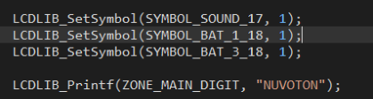
5. main.c에 있는 Configure_LCD_Pins() 함수의 핀 구성을 NuTool-PinConfigure 도구에서 생성된 코드로 바꿉니다. 프로젝트는 올바른 핀 구성과 lcdzone.h를 통해서만 작동할 수 있습니다.
6. 빌드 명령을 실행하고 코드를 칩에 다운로드합니다. LCDView를 엽니다. 1단계에서 설명했거나 이전에 생성한 NVT 파일을 로드합니다. 그런 다음 에뮬레이터 모드를 열면 칩의 LCD 화면과 동시에 Canvas가 표시되는 것을 볼 수 있습니다.
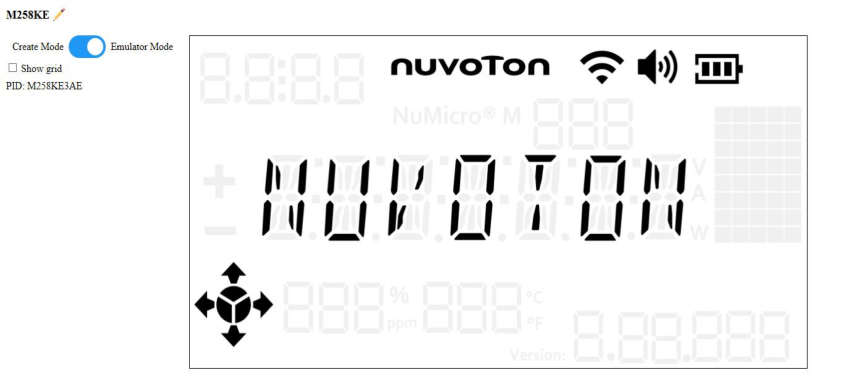
6 터치 키 기능 사용 방법
이 도구를 사용하면 화면에서 터치 키 기능을 시뮬레이션할 수 있습니다. 데모를 위해 Keil을 사용하여 다음 단계에 따라 진행하십시오.
1. 프로젝트가 성공적으로 컴파일되면 프로젝트 폴더에서 확장자가 .map인 파일을 검색합니다.
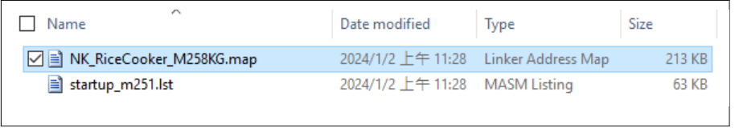
2. .map 파일에서 다음 4개 변수의 주소를 찾습니다: u8MaxScKeyNum, u8Key_Simulation_En, u8Key_Simulation_Press, i8ProcessSigLvl:
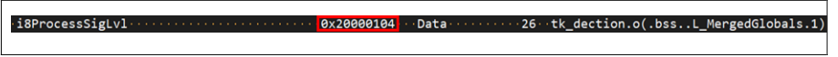
3. 주소를 찾으면 LCDView의 해당 필드에 입력합니다.
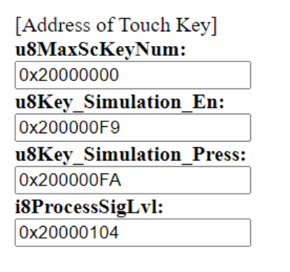
4. 아이콘을 선택한 후 해당 아이콘과 관련된 "터치 키 인덱스"를 정보 열의 'TK 인덱스' 필드에 입력합니다.
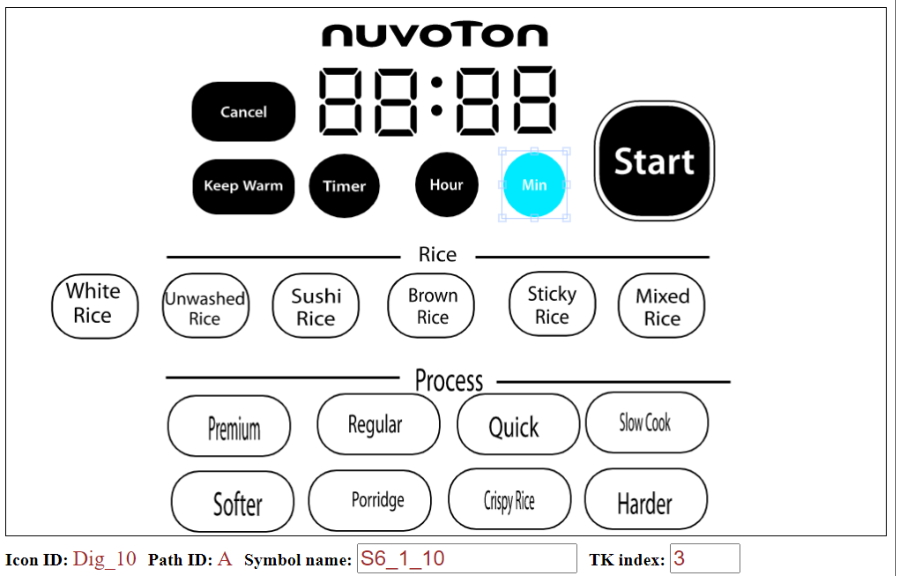
5. 에뮬레이터 모드로 전환한 다음 아이콘을 클릭하여 터치 키 클릭 효과를 시뮬레이션할 수 있습니다.
참고: 에뮬레이터 모드로 전환하고 아이콘을 클릭하면 물리적 터치 키 패널이 작동하지 않게 됩니다. 이는 두 시스템 간의 간섭을 방지하기 위한 메커니즘입니다. 생성 모드로 다시 전환하면 물리적 터치 키 패널이 정상 작동을 재개합니다.